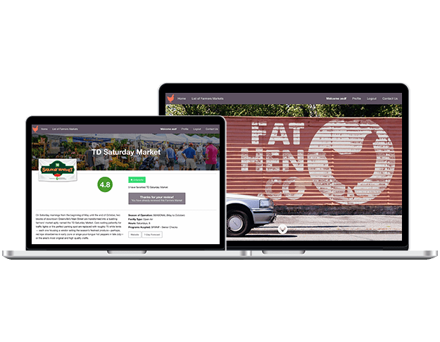

What I do
I am a web application developer at Peloton based in North Carolina. I work on a great Agile team and utilize Python with Django, GraphQL, Postgres, Git, AWS, etc...
Fat Hen
Find farmers markets and vendors, read and write reviews.
Django, Python, Heroku, Foundation CSS, Amazon S3, PostgreSQL, Django Autoslug, Django REST Framework, Geocoder, Dark Sky API, Google Maps API (Deployed August 2016)
View Code
Resume
RELEVANT EXPERIENCES
Senior Software Engineer
Oct 2021-Current
Peloton Interactive
Remote
- Develop Django Application to support the Corporate Wellness initiative
- Develop software for Peloton's Corporate Wellness and B2B programs, which brings in a $30m/yr
- Utilize Python, Django, Postgres, AWS, Terraform, Kubernetes, Docker, Datadog, Redis
- Focus on, API integrations with partners, data privacy, right to be forgotten, SFTP file transfer
- Implemented data privacy protocols, including 'right to be forgotten' compliance
- Orchestrated API integration and SFTP file transfer projects with 20+ partners
Jan 2017-Oct 2021
Kunz, Leigh & Associates
Okemos, MI
- Continue development of enterprise, multi-tenant web application used to manage recovery activities for the Michigan Medicaid program due to third-party liability, recovery of $40m+/year
- Utilize Java, Spring Boot, PL/SQL, Angular, Jest/Karma/Spock testing, git, Jenkins, Groovy, Jira
- Lead Developer on porting the last module from legacy software to new cloud multi-tenant web application, which helps recover $5m+/year
Sept 2016-Dec 2016
The Iron Yard
Greenville, SC
- Was available to Backend Engineering students during lab time for programming questions
- Gave ad-hoc lectures on Python and Django
Feb 2015-May 2016
The New Human
Brevard, NC
- Helped increase revenue by 20% through website optimization and marketing campaigns.
- Maintained e-commerce and online learning website (LMS)
- Managed customer support services, and provided customer support for the website.
- Created designs for print and web
- Email marketing campaigns
- Streamlined workflow, connecting different services together with APIs
Nov 2014- Mar 2015
WE•DO Worldwide
Brevard, NC
- Made updates on WordPress client sites.
- Design graphics for client websites.
EDUCATION
Backend Engineering with Python and Django
The Iron Yard, Greenville, SC
- Completed 12-week intensive immersion program for backend development focused on Python, Django and RESTful APIs. This immersive coding course culminated with a final project, fathen.co, a Yelp for farmers markets, a full featured web app deployed to Heroku.
Brevard College, Brevard, NC
SKILLS
- Python
- Django
- Java
- Spring Boot
- Angular
- Groovy
- Teradata
- Linux
- Git/Github
- bash/ZSH
- PL/SQL
- PostgreSQL
- Oracle
- RESTful APIs
- Heroku
- Amazon S3